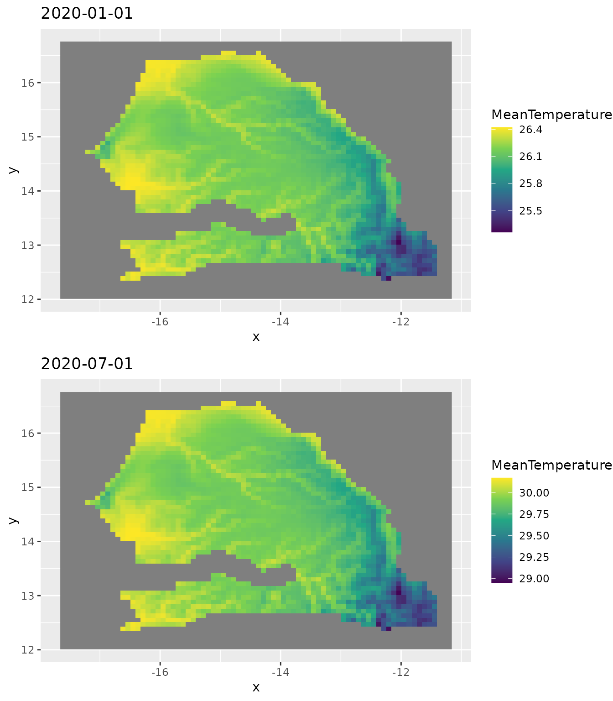

Daily weather interpolation over Senegal
Miquel De Cáceres
2023-06-01
interpolation-senegal.RmdIn this document we show how to obtain and process the topographic and weather data needed by package meteoland to conduct weather interpolation over a given country, using package worldmet as source for reference weather station data. We’ll use Senegal as case study.
We begin by loading necessary libraries, all available from CRAN:
library(sf)
library(dplyr)
library(terra)
library(stars)
library(geodata)
library(tidyterra)
library(meteoland)
library(ggplot2)
library(cowplot)We will also use package afrilearndata from GitHub, to display African country limits:
# remotes::install_github("afrimapr/afrilearndata")
library(afrilearndata)Accessing weather station data
We start by loading package worldmet, which provides access to over 30.000 weather stations across the globe:
In order to download weather data, we must first obtain the codes of
the weather stations available for our study area. This can be done
using function getMeta() from worldmet, which we use to
know available weather stations for Senegal and neighbouring
countries:
# Country codes:
# Senegal - SG
# Gambia - GA
# Guinea - GV
# Mali - ML
# Mauritania - MR
# Guinea bissau - PU
sg_st <- dplyr::bind_rows(worldmet::getMeta(country="SG", plot = FALSE),
worldmet::getMeta(country="GA", plot = FALSE),
worldmet::getMeta(country="GV", plot = FALSE),
worldmet::getMeta(country="ML", plot = FALSE),
worldmet::getMeta(country="MR", plot = FALSE),
worldmet::getMeta(country="PU", plot = FALSE))The station metadata looks like this:
sg_st## # A tibble: 57 × 12
## usaf wban station ctry st call latitude longitude `elev(m)` begin
## <chr> <chr> <chr> <chr> <chr> <chr> <dbl> <dbl> <dbl> <date>
## 1 6160… 99999 SAINT … SG NA GOSS 16.1 -16.5 2.7 1949-04-01
## 2 6161… 99999 PODOR SG NA GOSP 16.6 -15.0 7 1973-01-01
## 3 6162… 99999 LINGUE… SG NA GOOG 15.4 -15.1 21 1950-03-04
## 4 6163… 99999 MATAM/… SG NA GOSM 15.6 -13.2 17 1949-04-23
## 5 6164… 99999 LEOPOL… SG NA GOOY 14.7 -17.5 25.9 1943-04-01
## 6 6166… 99999 DIOURB… SG NA GOOD 14.6 -16.2 9 1950-02-06
## 7 6167… 99999 KAOLACK SG NA GOOK 14.1 -16.1 7.9 1950-02-05
## 8 6168… 99999 TAMBAC… SG NA GOTT 13.7 -13.7 49.1 1949-05-01
## 9 6169… 99999 ZIGUIN… SG NA GOGG 12.6 -16.3 22.9 1949-04-02
## 10 6169… 99999 CAP SK… SG NA GOGS 12.4 -16.7 15.8 1977-11-01
## # ℹ 47 more rows
## # ℹ 2 more variables: end <date>, code <chr>Let’s assume that we want to interpolate weather for year 2020. We
can download hourly weather station data for the selected stations and
year 2020 using function importNOAA() and programming a
loop over stations:
hourData <- NULL
for(i in 1:length(sg_st$code)) {
cat(paste0(sg_st$code[i]," "))
tryCatch({
hi <- worldmet::importNOAA(code = sg_st$code[i], year=2020, quiet=TRUE)
if(is.null(hourData)) {hourData <- hi}
else {hourData <- dplyr::bind_rows(hourData,hi)}
cat(" [success].")
}, error = function(e) {cat("[failed].")})
}Processing weather station data for interpolation
Some stations had missing data for year 2020 and were excluded from
the output. Using function worldmet2meteoland() from
meteoland, we can reshape the hourly data of the
remaining stations into daily data in form of an sf
object:
sf_sen <- worldmet2meteoland(hourData, complete = TRUE)
sf_senAn interpolator object needs to be created for interpolation,
containing not only station weather and topographic data but also
interpolation parameters. This can be obtained using function
create_meteo_interpolator():
interpolator_sen <- meteoland::create_meteo_interpolator(sf_sen, verbose = FALSE)## Warning: No interpolation parameters provided, using defaults
## ℹ Set the `params` argument to modify parameter default valuesThe warning message indicates that default interpolation parameters are set and in a serious application we should calibrate the parameters before using the reference data for interpolation.
The interpolator object is of class stars:
interpolator_sen## stars object with 2 dimensions and 13 attributes
## attribute(s):
## Min. 1st Qu. Median Mean 3rd Qu.
## Temperature 11.0000000 26.450000 28.537500 28.750958 30.91154
## MinTemperature 8.5000000 21.000000 24.000000 23.712257 26.00000
## MaxTemperature 11.0000000 31.000000 34.050000 34.322865 38.00000
## RelativeHumidity 0.2667855 34.205043 57.318043 55.513283 77.66032
## Precipitation 0.0000000 0.500000 3.750000 11.342697 13.00000
## Radiation 6.6175299 17.168025 19.766780 19.375520 22.35280
## WindDirection 0.0000000 52.937535 192.002116 171.436844 270.00000
## WindSpeed 0.0000000 1.500000 2.311111 2.605188 3.31099
## elevation 1.0000000 17.000000 51.500000 172.636383 289.00000
## aspect 0.0000000 0.000000 0.000000 0.000000 0.00000
## slope 0.0000000 0.000000 0.000000 0.000000 0.00000
## SmoothedPrecipitation 0.1000000 3.000000 8.000000 11.312237 14.66667
## SmoothedTemperatureRange 0.0000000 5.555667 9.225806 9.525796 14.16504
## Max. NA's
## Temperature 48.00000 3893
## MinTemperature 48.00000 3893
## MaxTemperature 48.20000 3893
## RelativeHumidity 100.00000 3893
## Precipitation 381.30000 15778
## Radiation 28.92108 3893
## WindDirection 360.00000 4464
## WindSpeed 33.50000 3983
## elevation 1035.10000 0
## aspect 0.00000 0
## slope 0.00000 0
## SmoothedPrecipitation 137.30000 12897
## SmoothedTemperatureRange 21.40484 1816
## dimension(s):
## from to offset delta refsys point
## date 1 366 2020-01-01 UTC 1 days POSIXct FALSE
## station 1 47 NA NA WGS 84 TRUE
## values
## date NULL
## station POINT (-9.35 15.23333),...,POINT (-8.833333 7.733333)If needed, we can display the location of the weather stations on a map with country limits. This is useful to know the station density in the study area. In our case we will use the following code:
data("africountries")
senegal <- africountries[africountries$name=="Senegal",]
ggplot()+
geom_sf(data = sf::st_geometry(africountries))+
geom_sf(data = sf::st_geometry(senegal), fill= "red")+
geom_sf(data = sf_sen[1], size = 0.5)+
xlim(c(-20,0))+ ylim(c(0,30))+
theme_bw()
Accessing and arranging topographic data
To perform weather interpolation, we need the topography (elevation,
slope, aspect) of the target area. We can use function
elevation_30s() from package geodata to
download elevation data for Senegal:
## class : SpatRaster
## dimensions : 564, 780, 1 (nrow, ncol, nlyr)
## resolution : 0.008333333, 0.008333333 (x, y)
## extent : -17.7, -11.2, 12.1, 16.8 (xmin, xmax, ymin, ymax)
## coord. ref. : lon/lat WGS 84 (EPSG:4326)
## source : SEN_elv_msk.tif
## name : elevation
## min value : -7
## max value : 542The previous function return SpatRaster object (package
terra). In order to estimate slope and aspect we can
use function terrain() from the terra
package:
slope_raster <- terra::terrain(elev_raster, v = "slope", unit="degrees")
aspect_raster <- terra::terrain(elev_raster, v = "aspect", unit="degrees")We can plot the three rasters using with ggplot() using
geom_spatraster() from package
tidyterra:
p1 <- ggplot()+
tidyterra::geom_spatraster(data = elev_raster)
p2 <- ggplot()+
tidyterra::geom_spatraster(data = slope_raster)
p3 <- ggplot()+
tidyterra::geom_spatraster(data = aspect_raster)
cowplot::plot_grid(p1, p2, p3, nrow=3)
We now assemble the three rasters into a single object:
topo_spatraster <- c(elev_raster, slope_raster, aspect_raster)The resolution of the raster is quite high, which would make
interpolation quite slow. For this reason, we use function
aggregate() from package terra to lower
the resolution and speed-up calculations, but one may skip this
step.
fact <- 10
topo_spatraster_agg <- terra::aggregate(topo_spatraster, fact = fact)Finally, we reshape the raster into an object of package stars:
topo_stars_agg <- stars::st_as_stars(topo_spatraster_agg, as_attributes=TRUE)Performing interpolation
We are now ready to perform the interpolation of weather over the
study area. We can simply call function interpolate_data()
from meteoland. Here we restrict the interpolation to
two dates in 2020 to speed up calculations:
raster_interpolated <- topo_stars_agg |>
interpolate_data(interpolator_sen, dates = c(as.Date("2020-01-01"), as.Date("2020-07-01")),
verbose = FALSE)## Warning: Some points are outside the convex hull of the `interpolator` object.
## ✖ Indexes of outside points are "1", "2", "3", "79", "80", "81", "157", "158",
## "159", "235", "236", "237", "313", "314", "315", "391", "392", "393", …,
## "4381", and "4382"## Warning: Some/All dates for points 1, 2, 3, 4, 5, 6, 7, 8, 9, 10, 11, 12, 13, 14, 15,
## 16, 17, 18, …, 4445, and 4446 have missing precipitation values, assuming clear
## days when interpolating radiation for these daysWarnings are raised because some raster locations (those over the ocean) are outside the convex hull of the stations in the interpolator object.
The result of the interpolation is a raster object of class stars:
raster_interpolated## stars object with 3 dimensions and 14 attributes
## attribute(s):
## Min. 1st Qu. Median Mean
## MeanTemperature 2.565365e+01 26.23864756 28.345599 28.7768531
## MinTemperature 1.780179e+01 18.59377204 22.771621 22.6439269
## MaxTemperature 3.054606e+01 31.19507875 32.304597 32.7642672
## Precipitation 3.215852e+00 3.52096659 3.978737 4.3363956
## MeanRelativeHumidity 2.825355e+01 32.85716167 51.729265 51.1044770
## MinRelativeHumidity 2.121382e+01 24.69259011 41.347453 41.6214869
## MaxRelativeHumidity 4.486208e+01 52.05561466 74.291399 71.4489409
## Radiation 2.801955e+00 15.55513556 16.100066 16.8713725
## WindSpeed 0.000000e+00 1.93919118 2.698219 2.7965086
## WindDirection 8.060414e-04 45.04598690 56.436659 65.4985776
## PET 1.126321e+00 4.29583587 4.646448 4.8194632
## elevation 1.310000e+00 34.45750000 48.660000 54.0612085
## slope 1.792378e-02 0.09556268 0.188352 0.2429773
## aspect 6.735251e+01 168.39402989 192.848440 189.9267863
## 3rd Qu. Max. NA's
## MeanTemperature 31.4373275 32.148596 4556
## MinTemperature 26.7186160 27.303999 4556
## MaxTemperature 34.4804223 35.541945 4556
## Precipitation 4.9962097 7.225850 6724
## MeanRelativeHumidity 68.7716839 74.486197 4556
## MinRelativeHumidity 58.1442049 65.381005 4556
## MaxRelativeHumidity 89.7925874 94.773621 4556
## Radiation 18.5510236 20.952236 4556
## WindSpeed 3.4308832 6.867714 0
## WindDirection 76.6790590 359.999997 4446
## PET 5.2584016 7.192732 4556
## elevation 62.6900000 215.770000 4556
## slope 0.3307207 2.613510 4616
## aspect 213.6666970 287.613543 4616
## dimension(s):
## from to offset delta refsys point x/y
## x 1 78 -17.6583 0.0833333 WGS 84 FALSE [x]
## y 1 57 16.7583 -0.0833333 WGS 84 FALSE [y]
## date 1 2 2020-01-01 182 days Date FALSEWe can display the maps for specific dates and variables using:
p1 <- ggplot()+
geom_stars(data = raster_interpolated["MeanTemperature",,,1])+
scale_fill_viridis_c()+
labs(title = "2020-01-01")
p2 <- ggplot()+
geom_stars(data = raster_interpolated["MeanTemperature",,,2])+
scale_fill_viridis_c()+
labs(title = "2020-07-01")
cowplot::plot_grid(p1, p2, nrow = 2)